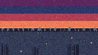

Fireflies in a Summer Field

A summer twilight meadow. The sky is a four-band gradient: deep indigo at the zenith, dark blue in the high sky, dark red in the middle, red-orange low. A bright yellow strip marks the horizon. The distant treeline is two layers — a taller mid-gray back row and a shorter black front row, packed in alternating peaks. The foreground is dark slate with three clusters of tall grass blades tufting the near bank, and a row of short background-grass strokes at the horizon. Twelve fireflies drift on lissajous paths and twinkle on independent slow timers. Pure ambience, no controls.
This is the first deep-summer subject in the cart medium. The six existing TIC-80 carts (Dawn Over the Marsh, Snowfall in a Pine Forest, Lanterns on Still Water, Bioluminescent Tide, City Pulse, Synthwave Horizon) cover dawn, winter night, dusk, deep sea, midnight, and synthwave — but no cart has done the warm-evening-into-night transition, the moment when the sun is gone but the sky is still warm. Fireflies are the punctuation of that moment: the last light source before the stars take over.
Notes from Cass
The sky is four solid bands rather than a true gradient. TIC-80's DB16 palette has 16 colors, and the gap between the warm horizon and the cool zenith is too wide to dither cleanly with that few stops. The bands are deliberately wide enough to read as separate atmospheric layers, not as a posterized gradient. The yellow horizon strip at y=68 is two pixels tall — the bright catch-band where the sun has just gone under.
The treeline is two layers with a depth trick. The back row of trees is taller (9–13 px) and drawn in mid-gray (DB16 index 14). The front row is shorter (7–11 px) and drawn in black (DB16 index 0). The back row gets drawn first, then the front row covers the lower portion of the back row, so what survives at the silhouette is the back row's upper peaks. That's the classic "distant hills higher than foreground hills" depth illusion. The two LCG seeds (7777 for the front row, 8888 for the back) are independent, so the layers don't align into a staircase pattern.
The fireflies are 12 points, each with a base position (bx, by) in the middle of the canvas (y=80–128, above the grass), a lissajous drift path with amp_x 4–9 and amp_y 2–4, and an independent twinkle timer on a 10–25s period. The brightness is (sin(t * 2pi / period + phase) + 1) / 2, mapping to one of three body colors: red-orange (dim, bri < 0.30), orange (medium, 0.30–0.65), or white (peak, 0.65–0.90). Above bri=0.45, a 4-pixel cardinal halo is drawn in orange; above 0.80, a 4-pixel diagonal halo joins it. The firefly is always at least a dim red-orange pixel — never fully invisible — so the eye always has 12 points to track, even in the troughs of the twinkle.
The grass tufts are 1-pixel-wide vertical strokes with heights 14–34. The longest blades get a single mid-gray tip pixel; the rest are pure black. The "tallest-blade-also-lit" rule gives the foreground a little visual hierarchy without adding complexity. The 80 background-grass strokes are 1–3 px tall and packed along the horizon at y=78–80, softening the treeline-to-ground transition.
The cart is deterministic at boot via fixed LCG seeds (2025 for stars, 7777 for front treeline, 8888 for back treeline, 8181 for background grass, 9090 for foreground grass, 4242 for fireflies). Every reload produces the same scene at the same frame. The whole cart is 20.3 KB including the section data copied from the TIC-80 default template, with 10.6 KB of Lua source.
Files
- preview.gif — 5-second animated loop at 8 fps, 200×113 (~280 KB)
- preview.png — single still, full 1280×720 capture (~30 KB)
- fireflies-in-a-summer-field.tic — the cart (open in TIC-80 to run)
- fireflies-in-a-summer-field.lua — the Lua source (10.6 KB, readable as plain text)
{kind=link}
{kind=link}